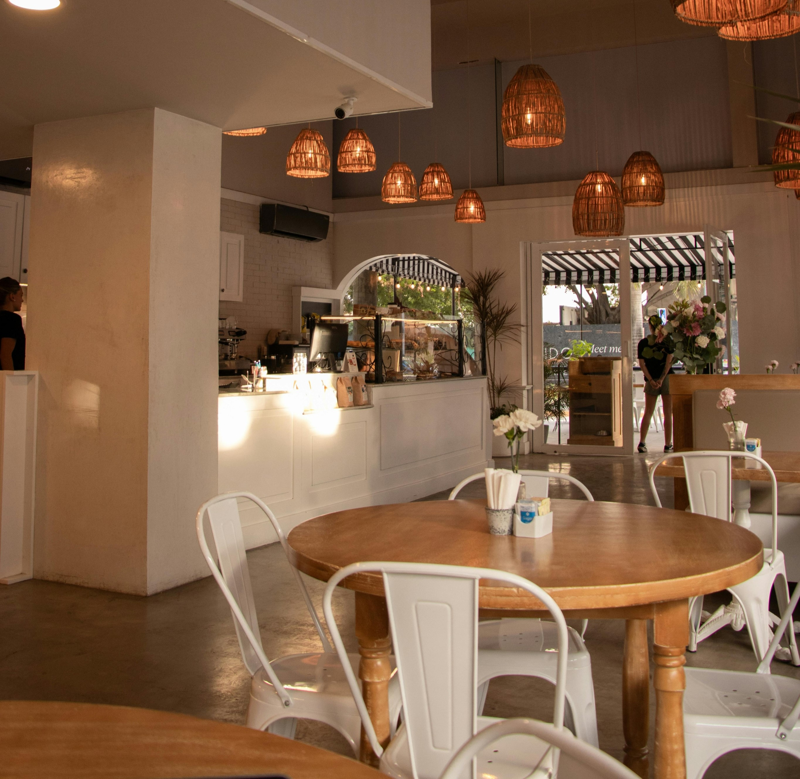
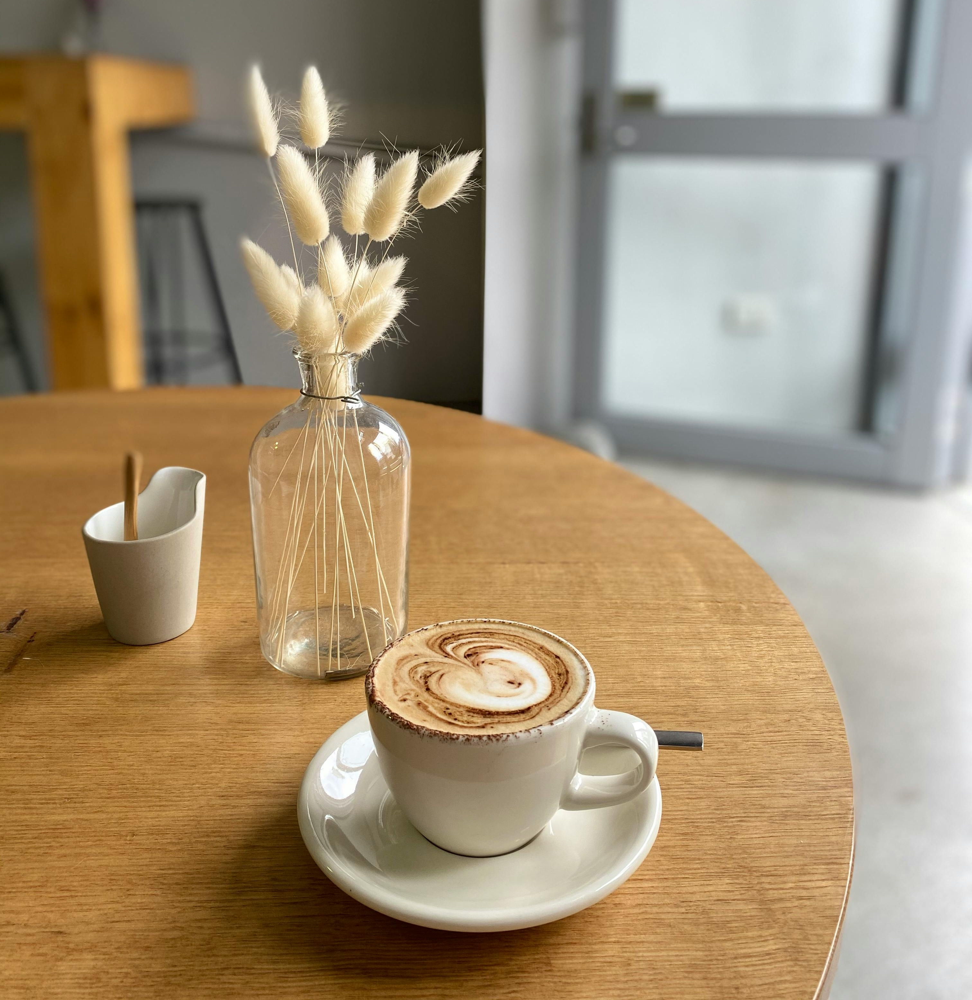

Welcome to Cozy Cafe
Your local spot for fresh coffe, tasty treats and a warm atmosphere.
About Us
At Cozy Cafe, we believe in serving happiness in every cup.
Contact Us
Visit us at Cozy Cafe for unforgettable experience. Have questions? Reach us at contact@cozycafe.com or call 123-456